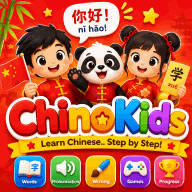

كيف نعلّم الأطفال اللغة الصينية في البيت: النغمات والبينيين والحروف ببساطة
للغة الصينية الماندرين سمعة اللغة الصعبة، لكن الأطفال يجدونها غالبًا أقلّ رهبة مما يجدها الكبار. فليس فيها تصريف للأفعال، ولا علامات للجمع، ولا تذكير وتأنيث نحوي. أما التحدّيان الحقيقيان — النغمات والحروف — فيصبحان ألغازًا ممتعة حين نقدّمهما بالترتيب الصحيح. ولا تحتاج إلى إتقان الصينية لتساعد طفلك: هذا الدليل يريك كيف تبدأ، خطوة بخطوة.
- لماذا الصينية أسهل مما تظنّ
- النغمات: موسيقى الماندرين
- البينيين: الصينية بالحروف اللاتينية
- الحروف الصينية: رسوم صغيرة تحكي قصصًا
- الكلمات الأولى وبرنامج أسبوعي
- ماذا نتوقّع في كل عمر
1. لماذا الصينية أسهل مما تظنّ
قواعد الماندرين بسيطة على نحو مفاجئ. فعبارات «أنا آكل» و«هو يأكل» و«هم أكلوا أمس» كلّها تستعمل الفعل نفسه chī، ويُعبَّر عن الزمن بكلمات مثل «أمس» لا بتغيير الفعل. وترتيب الجملة واضح: فاعل ثم فعل ثم مفعول: wǒ ài māma — «أنا أحبّ أمّي».
وللأطفال الصغار ميزتان أيضًا: يقلّدون الأصوات دون خجل، ويحبّون الأنماط والصور — وهذا بالضبط ما هي عليه النغمات والحروف. وتُظهر الأبحاث في التعلّم المبكّر أن من يبدأ صغيرًا يصل غالبًا إلى نطق أكثر طبيعية، بينما يتقدّم الأكبر سنًّا أسرع في المفردات والقواعد. وكلاهما يستطيع النجاح.
2. النغمات: موسيقى الماندرين
في الماندرين، تغيّر طبقة الصوت معنى الكلمة. والمثال الشهير هو المقطع ma:
| النغمة | البينيين | حركة الصوت | المعنى |
|---|---|---|---|
| الأولى | mā 妈 | عالية ومستوية، كنغمة غناء طويلة | أمّ |
| الثانية | má 麻 | صاعدة، كمن يسأل «ماذا؟» | قنّب |
| الثالثة | mǎ 马 | تنخفض ثم ترتفع | حصان |
| الرابعة | mà 骂 | تهبط بقوة، كمن يقول «لا!» | يوبّخ |
- استعمل اليدين: ارسما كل نغمة في الهواء — مستوية، صاعدة، على شكل علامة «صح»، هابطة. فالأطفال يتذكّرون الحركات أكثر من الشروح.
- غنّيا: الأناشيد الصينية للأطفال مثل «النمران» (على لحن «Frère Jacques» المعروف) تحمل النغمات والإيقاع بشكل طبيعي.
- العبا «محقّق النغمات»: قل كلمة ودع طفلك يُظهر نغمتها بيده.
- لا تُكثر من التصحيح: امدح المحاولة وأعِد الكلمة بشكل صحيح. فالنغمات تتحسّن بالاستماع لا بالضغط.
3. البينيين: الصينية بالحروف اللاتينية
البينيين هو النظام الرسمي لكتابة أصوات الصينية بالحروف اللاتينية، مع علامات صغيرة فوق الحروف الصوتية تدلّ على النغمات (ā á ǎ à). إنه جسر وليس هدفًا: يتيح للأطفال — وللآباء — قراءة النطق ما دامت الحروف الصينية جديدة عليهم.
انتبه إلى بعض الحروف التي تُنطق بخلاف المتوقّع: x قريبة من «ش»، وq قريبة من «تش»، وzh قريبة من «ج»، وc تُنطق «تس». ويُستحسن تقديم البينيين من نحو سنّ السادسة، بعد أن يتمكّن الطفل من القراءة بالحروف اللاتينية في المدرسة، حتى لا يختلط النظامان.
4. الحروف الصينية: رسوم صغيرة تحكي قصصًا
كثير من الحروف البسيطة كانت في الأصل رسومًا، ولذلك فهي مثالية للأطفال. اعرض الصورة أولًا ثم الحرف:
| الحرف | البينيين | المعنى | قصة للتذكّر |
|---|---|---|---|
| 人 | rén | إنسان | ساقان تمشيان |
| 木 | mù | شجرة | جذع بأغصان وجذور |
| 林 | lín | غابة صغيرة | شجرتان معًا |
| 日 | rì | شمس، يوم | كان قديمًا دائرة في وسطها نقطة |
| 口 | kǒu | فم | فم مفتوح |
| 好 | hǎo | جيّد | 女 (امرأة) + 子 (طفل): أمّ مع طفلها، وهذا جيّد |
ويكتشف الطفل أن الحروف تتكوّن من أجزاء أصغر تُسمّى الجذور، تعطي إشارات إلى المعنى — فالجذر 木 يظهر في كلمات كثيرة متعلّقة بالأشجار والخشب. والتعرّف على الحروف يأتي قبل كتابتها بكثير. وحين يبدأ طفلك الكتابة، علّمه ترتيب الخطوط (من الأعلى إلى الأسفل، ومن اليسار إلى اليمين) بخطوط كبيرة على الورق أو السبّورة.
5. الكلمات الأولى وبرنامج أسبوعي
ابدأ بكلمات يستعملها طفلك كل يوم:
- التحيّات: nǐ hǎo (مرحبًا)، xièxie (شكرًا)، zàijiàn (إلى اللقاء).
- الأعداد من 1 إلى 10: yī, èr, sān, sì, wǔ, liù, qī, bā, jiǔ, shí — عدّا الدرجات والألعاب والفواكه.
- العائلة: māma (أمّ)، bàba (أب)، gēge (الأخ الأكبر)، jiějie (الأخت الكبرى).
- الألوان والحيوانات: مثالية لألعاب الصور وبطاقات الذاكرة.
برنامج بسيط أنفع من الدروس الطويلة:
| اليوم | نشاط من 10 إلى 15 دقيقة |
|---|---|
| الاثنين | تعلّم 3 كلمات جديدة ببطاقات مصوّرة |
| الثلاثاء | أنشودة أو رسوم متحرّكة قصيرة بالصينية |
| الأربعاء | حرف الأسبوع: رسم قصّته |
| الخميس | لعبة ذاكرة بكلمات الأسبوع |
| الجمعة | استعمال الكلمات في الواقع: العدّ، والتحية، وتسمية الألوان |
6. ماذا نتوقّع في كل عمر
| العمر | الأولوية | أهداف واقعية |
|---|---|---|
| 3–5 سنوات | الاستماع، والأناشيد، والحركات | التحيّات، والأعداد حتى 10، وبعض الأناشيد، وتقليد النغمات |
| 6–8 سنوات | الكلام، والبينيين، والحروف البسيطة | 100 إلى 200 كلمة، وجمل قصيرة، والتعرّف على 20 إلى 50 حرفًا |
| 9–12 سنة | القراءة، والكتابة، والمحادثة | محادثات بسيطة، وقراءات متدرّجة، وكتابة الحروف الشائعة |
تعلّم أكثر من لغة مفيد للطفل؛ اقرأ دليلنا عن أفضل سنّ لتعلّم لغة وأسرار تعلّم اللغات. كما أن جولة من لعبة الذاكرة المجانية تمرين ممتاز لتذكّر الحروف الجديدة.

البينيين والنغمات والحروف والكلمات الأولى مع الصوت والألعاب — الصينية للأطفال خطوة بخطوة.
ابدأ صغيرًا، واجعلها موسيقية، واكشف القصص المخبّأة في الحروف، واستعمل الصينية في الحياة اليومية. دقائق قليلة كل يوم ستأخذ طفلك أبعد مما تتوقّع.
أسئلة شائعة
هل يستطيع طفلي تعلّم الصينية إن لم يتكلّمها أحد في البيت؟
نعم. استعمل تسجيلات لناطقين أصليين في التطبيقات والأناشيد والفيديوهات حتى يسمع النغمات الصحيحة، وتعلّم معه. فالممارسة اليومية القصيرة أهمّ من وجود والد يتقنها.
هل يبدأ الطفل بالبينيين أم بالحروف الصينية؟
ابدأ بالاستماع والكلام، ثم قدّم البينيين من نحو سنّ السادسة دليلًا على النطق. وتعلّما التعرّف على الحروف البسيطة بالتوازي، أما الكتابة فتأتي لاحقًا.
ما النغمات الأربع في الماندرين؟
عالية مستوية (mā)، وصاعدة (má)، ومنخفضة ثم صاعدة (mǎ)، وهابطة (mà). والمقطع نفسه بنغمة مختلفة كلمة مختلفة، ولذلك تفيد الأناشيد وحركات اليد كثيرًا.